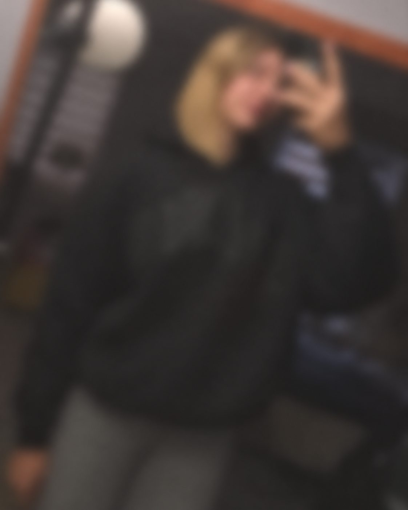

✦
PowiadomieniaKtoś oznaczył Cię na zdjęciu 👀
Rozpoznajesz kogoś na zdjęciu? Otwórz podgląd, żeby zobaczyć je wyraźnie.

Odkryj zdjęciePodgląd jest rozmyty do czasu potwierdzenia dostępu
Rozpoznajesz kogoś na zdjęciu? Otwórz podgląd, żeby zobaczyć je wyraźnie.

Odkryj zdjęciePodgląd jest rozmyty do czasu potwierdzenia dostępu